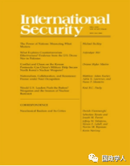
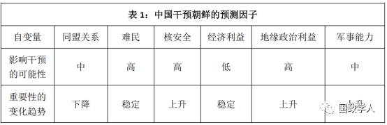

收录于合集

简 介
【作者】 梅惠琳 （Oriana Skylar Mastro）是乔治城大学埃德蒙沃尔什外事学院安全研究项目的助理教授，美国空军预备役军官，担任太平洋空军司令部政治军事战略专家职务。精通汉语，研究领域主要包括中国军事和安全政策研究，亚太安全问题研究，停战研究和强制外交研究，并在卡内基国际和平基金会、兰德公司、美国太平洋司令部和2049计划研究所等重要机构从事中国政策研究。
【编译】 姚寰宇
【校对】 徐枫潇
【审核】 王国欣
【来源】 International Security, Vol. 43, No. 2 (Fall 2018), pp. 84–116
【期刊简介】 《国际安全》（International Security）是国际和国家安全领域的同行评议学术期刊。它成立于1976年，由哈佛大学贝尔弗科学与国际事务中心(Belfer Center for Science and International Affairs at Harvard University)编辑，麻省理工学院出版社(MIT Press)每年出版四次。2017年影响力因子为4.135，在“国际关系”类别的85种期刊中排名第2位。

朝鲜半岛的冲突与混乱： 中国军方可以帮助确保朝鲜核武器安全吗？
Conflict and Chaos on the Korean Peninsula: Can China’s Military Help Secure North Korea’s Nuclear Weapons?
梅惠琳（Oriana Skylar Mastro）
内容提要
本文针对中国在朝鲜半岛可能发挥的作用进行研究，意在填补安全研究领域的三个缺口：第一，提供一个基于“干预（intervention）”的分析框架，用以理解为什么第三方会选择干预一场代价高昂的外部冲突，强调大国竞争是除人道主义之外第三方干预其他国家的重要动力；第二，本文是最先详细地从中国的现实利益和能力的基础上阐述中国在朝鲜问题上的潜在使命；第三，本文对中国应对大规模杀伤性武器（WMD-C3D）的能力进行了首次学术评估。
文章主体分为四部分，第一部分从安全研究的有关文献中推导出“干预”的六个关键指标（six key indicators of intervention）；第二部分重点分析在当前局势下这六个指标对中国干预朝鲜突发事件的影响；第三部分评估中国应对大规模杀伤性武器的能力（WMD-C3D）；第四部分通过分析中国参与朝鲜事务对美国的利弊，在结论的基础上建议中美之间应就朝鲜半岛突发事件加强合作，并以此确保中国能够帮助美国实现其WMD-C3D任务的目标。
正文
前言
朝鲜问题一直是美国在最近几十年来所面临的最复杂的安全挑战之一，作者回顾了从2017年开始朝美双方之间就朝核问题进行曲折谈判的过程并指出，朝美之间谈判的不确定性和朝鲜核设施令人不安的活动迹象都表明朝鲜并没有放弃其核武器库的计划。即使美国和朝鲜同意实施朝鲜半岛无核化，朝鲜也可能暗中违反协议或违背承诺。如果金氏政权垮台、朝鲜半岛陷入混乱，美国将考虑动用武力解除朝鲜军事武装或控制朝鲜核武器库。在上述任何一种情况下，中国都有可能扮演关键角色。
过去二十年间，朝核问题一直横亘在中美关系之间，美国的决策层和专家一致认为停止朝鲜的核导计划是中美双边关系的首要任务。双方虽就朝核问题寻求合作，但并没有就应对包括朝鲜政权的颠覆等突发性情况进行沟通与协调。美国政府认为，确保朝鲜的大规模杀伤性武器（weapons of mass destruction ，WMD）及相关设施的销毁，是“美国任务的重中之重”。 目前这个任务被称为 “WMD-C3D (WMD control, defeat, disable, and dispose)” ，是指在敌对或不确定的环境下，系统地定位、识别、废弃和销毁一个国家或者非国家行为体所拥有的大规模杀伤性武器以及相关设施的一系列军事行动。 ****
有一个问题一直没有在政界和学界得到充分讨论：即在突发状况下，中国将如何影响美国确保朝鲜核武器及相关设备的安全、并最终将其销毁的能力。作者认为：中国有可能干预朝鲜半岛的突发事件，且中国军队在朝鲜半岛执行 WMD-C3D任务整体上有利于美国利益和地区安全利益。虽然美国将WMD-C3D任务部分让渡给中国也有缺陷，但考虑到美国在地缘、后勤和人力等方面的劣势，加上可能面临与中国发生战争的风险，美国此举的实际收益将大于其战略成本。
1
国家干预的原因
当下，学者们对干预的研究多集中在内战中的人道主义干预（humanitarian intervention）上。但随着中国的崛起和俄罗斯的复兴，回归大国干预理论是有必要的。作者从文献研究中得出影响大国干预的六个因素：
1.联盟承诺（Alliance Commitment）。如果盟友是冲突中的一方，那么该国家更有可能介入。
2.相邻国家（Neighboring Country）。确切地说，如果冲突可能引发、甚至已经引发大量难民入境，该国会有进行干预的可能。
3.大规模杀伤性武器（WMD）。如果交战国拥有大规模毁灭性武器，潜在干预国可能会阻止相关国家使用该武器，或将其转移给其他行为体。
4.经济利益（Economic Considerations）。战争的高昂代价往往会阻止第三方的干预，但如果一国拥有丰富的可掠夺资源，将可能刺激第三方进行干预。
5.地缘政治利益（Geopolitical Considerations）。基于对战略利益或区域既得利益的考量，该国可能会通过干预左右战争结果。此外，如果对手国在战争中支持了其中一方，该国可能以支持另一方的形式来进行干预
6.军事能力（Military Capabilities）。如果该国有足够军事实力介入冲突，那么选择干预的可能性比较大；但如果干预成本过高，成功几率小，则介入的可能性较低。
2 中国对朝鲜突发状况的干预
作者将上一部分导出的六个干预因子作为自变量，并根据她在中国进行的访谈和整理的文献，将冲突爆发后每个自变量影响中国干预朝鲜半岛的可能性划分为高中低三个等级，并制作了一个动态指标，用于判断每个自变量对进行干预选择的影响趋势。文中还对影响中国干预朝鲜的六大主要因子进行了详细分析，分析结果如下：

上述因素只能对外部国家干预进行概括性预测。但对中国而言，出于对难民、核安全、地缘战略等因素的考量，以及自身实际军事实力的提高，中国不仅会选择干预，甚至会寻求对朝鲜核武器及相关设施的实际控制。
**3
** 中国与 WMD-C3D 任务
作者在这一部分评估了中国能否利用自身的核大国经验来成功执行 WMD-C3D任务。首先，详述中国在确保核设施安全，应对核危机、核扩散等问题上所进行的准备和措施，并指出：中国能够相对有效地清点、控制朝鲜所有核设施材料，为了防止核扩散，中国也会在必要时将核材料运往合适地点进行评估和销毁。
同时，中国也面临许多挑战，如：确保所有核设施的安全、核实相关设施内的储存物品以及防止核武器材料丢失等；中国方面有可能单纯为了阻止核扩散至中国境内，而忽略扩散至其他区域的可能；此外，中国在核武器的安全拆除等方面也面临很大挑战。作者认为，中国有能力承担WMD-C3D任务的部分工作，但美国和国际社会的支持可以帮助提高实施的效率。
**4
** 打败他们 而不是加入他们
长久以来，美国的传统观念认为中国介入朝鲜半岛突发事件会损害美国利益。作者首先分析该观点的三个主要理由，随后提出不同看法，即中国军队在紧急情况下介入朝鲜半岛将对美国执行WMD-C3D任务的几乎每个阶段都有好处。
中国作为《核不扩散条约》中公认的拥有核材料处理权的国家（韩国在《条约》限制下无法承担WMD-C3D责任），拥有美国所欠缺的人力、地缘和后勤优势。中国参与WMD-C3D任务，不仅能缓解美军在人员和地面战争的压力，使美军能专注于战事和地区维稳。此外，中国也可以为防止核扩散做出贡献。尽管中国在拆除和摧毁大规模杀伤性武器的能力上有一定不足，但是作者认为这并不影响WMD-C3D任务整体执行。
总之，鼓励中国执行WMD-C3D任务、或提高中国执行该任务的能力将有利于韩美同盟和朝鲜半岛安全；中国的控制将在短期内降低朝鲜使用核武器的可能性，并减轻美国潜在的经济和军事负担；此外，还能有效避免中美军队之间不必要的冲突，防止战争的升级。
**5
** 结论 **
**
尽管传统上认为，中国对朝鲜的潜在介入对美国而言都是威胁，但作者认 为中国军队介入始终是利大于弊的。因此，她提出两点建议：首先，美国单方面在朝鲜实行WMD-C3D任务并不可行；其次，美国应该考虑采取措施，以解决中国执行WMD-C3D任务时，在拆除和销毁核武器的能力与意愿上的缺失，为此中美之间需要进行充分协商。
作者呼吁，美国需要同步改变与中国处理彼此关系的方式，并接受新的思想和方法，真正为朝鲜半岛和平和世界核安全等问题做出应有的贡献。
本文由国政学人微信公众平台独家首发
** 扫描下方小程序码查看原文p df**
更多阅读
国政学人 （ID：guozhengxueren)
为方便学人及时阅读高质量文章
别忘把国政学人设置 星标 哦~